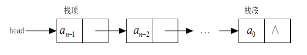

链式堆栈：
链式存储结构的堆栈称作链式堆栈。
与单链表相同，链式堆栈也是由一个个结点组成的，每个结点由两个域组成，一个是存放数据元素的数据元素域data，另一个是存放指向下一个结点的对象引用（即指针）域next。
堆栈有两端，插入数据元素和删除数据元素的一端为栈顶，另一端为栈底。链式堆栈都设计成把靠近堆栈头head的一端定义为栈顶。
依次向链式堆栈入栈数据元素a0, a1, a2, ..., an-1后，链式堆栈的示意图如下图所示：

1、设计链式堆栈：
(1)Node.java:结点类
package com.yc.stack.linkStack;
/**
* Created by yucheng on 2018/8/25.
*/
public class Node {
Object element; // 数据域
Node next; // 指针域,在Java中实际就是一个引用
// 头结点构造器(头结点无数据)
public Node(Node next) {
this.next = next;
}
// 非头结点的结点构造器
public Node(Object element, Node next) {
this.element = element;
this.next = next;
}
public Object getElement() {
return element;
}
public void setElement(Object element) {
this.element = element;
}
public Node getNext() {
return next;
}
public void setNext(Node next) {
this.next = next;
}
@Override
public String toString() {
return element.toString();
}
}
(2)Stack.java:
package com.yc.stack;
/**
* Created by yucheng on 2018/8/24.
*/
public interface Stack {
// 压栈
public void push(Object obj) throws Exception;
// 弹栈
public Object pop() throws Exception;
// 获取栈顶元素
public Object getTop() throws Exception;
// 判断是否为空
public boolean isEmpty();
}
(3)LinkStack.java:
package com.yc.stack.linkStack;
import com.yc.stack.Stack;
/**
* Created by yucheng on 2018/8/25.
*/
public class LinkStack implements Stack {
Node head; // 栈顶指针
int size; // 栈大小
public LinkStack() {
// 刚开始时，栈为空，因此栈顶指针为null,size为0
this.head = null;
this.size = 0;
}
// 压栈
@Override
public void push(Object obj) throws Exception {
// 压栈操作：将栈顶指针移向新插入的结点，
// 并将该结点的指针指向之前栈顶指针指向的位置
head = new Node(obj,head);
size++;
}
// 弹栈
@Override
public Object pop() throws Exception {
// 判定是否为空
if (isEmpty()){
throw new Exception("堆栈为空！");
}
// 弹栈操作：1.返回结点的element 2.将栈顶指针下移
Object obj = head.getElement();
head =head.getNext();
size--;
return obj;
}
@Override
public Object getTop() throws Exception {
// 判定是否为空,
if (isEmpty()){
throw new Exception("堆栈为空！");
}
return head.getElement();
}
@Override
public boolean isEmpty() {
return size == 0;
// or return head == null;
}
}
(4)Test.java:测试类
package com.yc.stack.linkStack;
/**
* Created by yucheng on 2018/8/25.
*/
public class Test {
public static void main(String[] args) throws Exception{
// 创建一个空栈
LinkStack ls = new LinkStack();
// 压栈：输出测试数据
for (int i = 0; i < 10; i++){
ls.push(i);
}
// 弹栈
while (!ls.isEmpty()){
System.out.print(ls.pop() + " ");
}
}
}
运行效果：